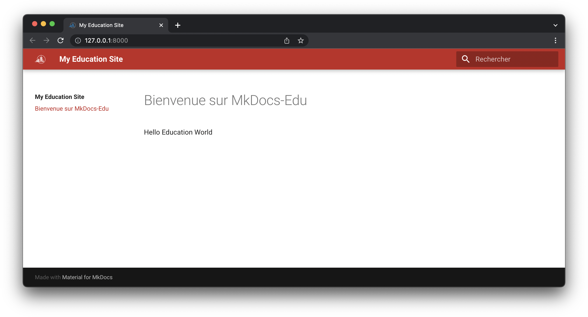

Thème du site
Le thème du site (couleur, police d’écriture, …) peut être modifié à l’aide du fichier config/mkdocs.yml et de fichiers css et javascript supplémentaires.
Modifiez le fichier config/mkdocs.yml comme suit :
site_name: My Education Site
docs_dir: '../docs/'
site_dir: '../public/'
theme:
name: material
language: 'fr'
font:
text: 'Roboto'
code: 'IBM Plex Mono'
custom_dir: '../overrides/'
logo: 'assets/images/heiafr.png'
favicon: 'assets/images/favicon.ico'
features:
- content.code.annotate
- navigation.sections
extra_css:
- 'stylesheets/extra.css'
extra_javascript:
- javascripts/mathjax.js
- https://polyfill.io/v3/polyfill.min.js?features=es6
- https://cdn.jsdelivr.net/npm/mathjax@3/es5/tex-mml-chtml.js
créez ensuite la structure de dossiers suivante:
overrides
├── assets
│ └── images
├── javascripts
└── stylesheets
Dans le dossier overrides/assets/images, copiez les images suivantes:
{kind=link}
Puis ajoutez le fichier overrides/javascripts/mathjax.js :
window.MathJax = {
tex: {
inlineMath: [["\\(", "\\)"]],
displayMath: [["\\[", "\\]"]],
processEscapes: true,
processEnvironments: true
},
options: {
ignoreHtmlClass: ".*|",
processHtmlClass: "arithmatex"
}
};
document$.subscribe(() => {
MathJax.typesetPromise()
})
et overrides/stylesheets/extra.css:
:root {
--md-primary-fg-color: #C32823;
--md-primary-fg-color--light: #fd5e4c;
--md-primary-fg-color--dark: #8b0000;
--md-accent-fg-color: #007CB7;
}
.md-content a {
text-decoration: underline;
}
Avec cette configuration, la couleur de base du site est celle de la filière ISC de la Haute école d’ingénierie et d’architecture de Fribourg (#C32823). Les variantes de teintes sont déterminées à l’aide du site https://material.io/resources/color.
Le site devrait maintenant ressembler à ça:
